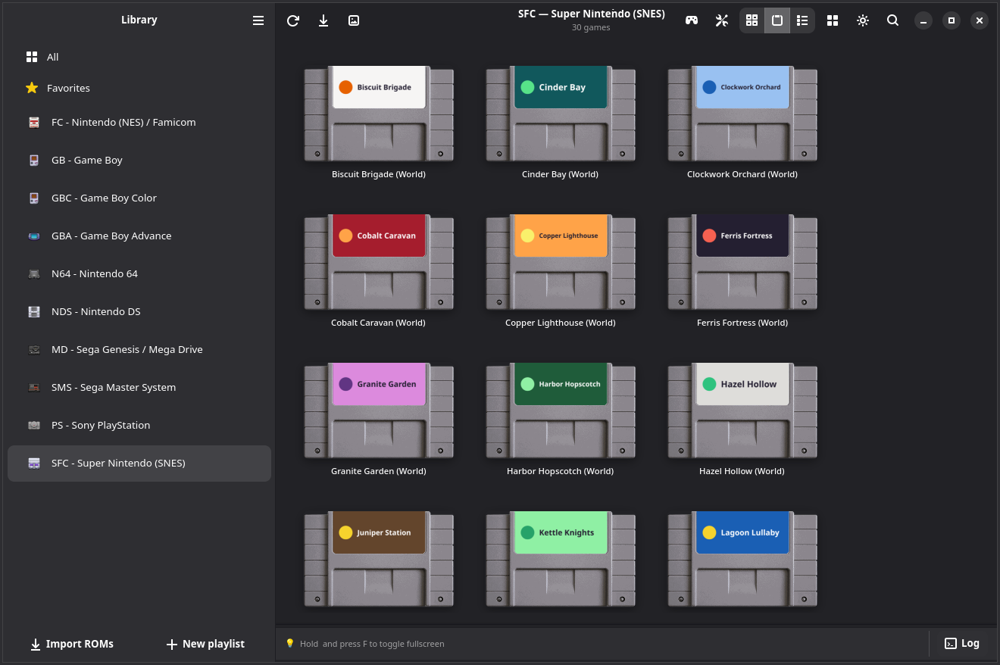

Votre collection rétro,
prête à jouer.
Ajoutez les jeux que vous possédez. OpenEmux les range par console, avec leurs jaquettes, sur Linux, Windows et Android.
Comment installer ↓ ▶ Voir la vidéo (45 s)
Libre et open source · Licence MIT · AppImage, .deb, .rpm & Flatpak sous Linux · installateur & ZIP portable sous Windows · APK sur Android (GPLv3)
Inspiré d’OpenEmu pour macOS, mais ce n’est pas un fork : un code distinct, avec RetroArch pour l’émulation. En savoir plus.


Chaque console, en cartouches.
Chaque console a sa page, avec ses jeux sur leurs propres cartouches. Passez aux jaquettes ou à la liste quand vous voulez.
Les jeux présentés sont fictifs et uniquement illustratifs. Ce ne sont pas de vrais jeux pour ces consoles, et leurs visuels ont été créés avec l’IA.
Une manette pour chaque console.
Sur Android, chaque console a sa manette à l'écran, en portrait et en paysage. Branchez une manette et elle s'efface.
Les jeux présentés sont fictifs et uniquement illustratifs. Ce ne sont pas de vrais jeux pour ces consoles, et leurs visuels ont été créés avec l’IA.
Android 8 ou plus récent, 64 bits (arm64). L’app Android est un fork de RetroArch, donc sous licence GPLv3 ; son code est sur openemux-android.
Chaque jeu sur la cartouche de sa console
Dans la vue cartouches, les jeux que vous avez ajoutés apparaissent avec l’illustration de leur étiquette sur la cartouche de leur console. Les cartouches ci-dessous sont un exemple de cette vue.
Installation
Il existe des paquets pour Debian, Ubuntu et Fedora, un AppImage, un Flatpak, un installateur pour Windows et un APK pour Android. Au premier lancement, OpenEmux configure le reste.
Linux
Toutes les distributions
chmod +x OpenEmux-x86_64.AppImage
./OpenEmux-x86_64.AppImagePas de FUSE ? Préfixez avec APPIMAGE_EXTRACT_AND_RUN=1.
Debian / Ubuntu
sudo apt install ./openemux_*_amd64.debUbuntu 24.04 LTS ou plus récent.
Fedora
sudo dnf install ./openemux-*.x86_64.rpmFedora 40 ou plus récent.
Isolé et mis à jour automatiquement
flatpak install -y flathub org.libretro.RetroArch
flatpak remote-add --if-not-exists --no-gpg-verify \
openemux https://guilhermefeitosa66.github.io/openemux-flatpak/repo
flatpak install -y openemux io.github.guilhermefeitosa66.OpenEmuxLes mises à jour arrivent avec flatpak update. Un paquet
.flatpak en un seul fichier est aussi disponible sur la page des versions.
Windows Beta
Les deux versions embarquent GTK 4, l’environnement Python et RetroArch lui-même : il n’y a rien d’autre à installer. Windows 10 ou 11, 64 bits. C’est tout nouveau ; si quelque chose cloche, ouvrez un ticket.
La méthode classique
OpenEmux-*-setup.exeS’installe pour votre utilisateur uniquement, donc sans demande d’administrateur. Les versions ne sont pas encore signées : SmartScreen affichera un avertissement, et Informations complémentaires → Exécuter quand même permet de passer outre.
Rien à installer
OpenEmux-*-windows-x86_64.zipDécompressez-le où vous voulez et lancez OpenEmux.exe depuis
le dossier OpenEmux\ qu’il contient. Idéal pour une clé USB ou une machine sur laquelle vous ne
pouvez rien installer.
Android
L’APK n’est pas encore sur le Play Store : téléchargez-le depuis les Releases et autorisez le navigateur ou le gestionnaire de fichiers à installer des apps quand Android le demande. Android 8 ou plus récent, 64 bits.
Installer l’APK
OpenEmux-mobile.apkOuvrez le fichier téléchargé et confirmez. Les mises à jour s’installent de la même façon, par-dessus la version précédente.
Laissez-le télécharger les cœurs
À la première ouverture, l’app télécharge les cœurs des émulateurs. Mettez ensuite vos ROM dans Importer, ou dans Android/data/com.openemux.mobile/files/roms sur le téléphone.
Vérifiez votre téléchargement
Chaque version est livrée avec un fichier SHA256SUMS. Placez-le à côté du fichier
téléchargé et lancez :
sha256sum -c SHA256SUMS --ignore-missingOK signifie que le fichier est exactement celui qui a été publié.
Tout autre résultat signifie qu’il est corrompu ou a été modifié : ne l’exécutez pas.
Sous Windows, PowerShell affiche l’empreinte et vous la comparez à l’œil
avec la ligne correspondante de SHA256SUMS :
Get-FileHash .\OpenEmux-*-setup.exe -Algorithm SHA256Télécharger depuis les versions →
Vous préférez le compiler vous-même ?
make bootstrap && make run : consultez les instructions de compilation.
Tout le reste
Construit sur RetroArch
En coulisses, c’est RetroArch qui émule. Il est puissant, mais ses menus et ses réglages peuvent intimider quand on veut juste jouer. OpenEmux s’occupe de ce qu’il y a autour : ranger vos jeux, télécharger les cores, régler les contrôles et les shaders.
Vos jeux, par console
Les jeux que vous ajoutez sont regroupés par console, avec des jaquettes téléchargées depuis les archives de vignettes de libretro.
Prêt dès le premier lancement
À la première ouverture, OpenEmux crée sa configuration et télécharge les cores dont vos consoles ont besoin, en général en une dizaine de secondes. Les autres continuent de se télécharger en arrière-plan.
Contrôles par console
Réglez le clavier et la manette de chaque console dans un seul panneau. OpenEmux les transmet à RetroArch au lancement du jeu.
Shaders par console
Choisissez un shader CRT ou à scanlines pour chaque console dans une courte liste, sans passer par le menu des shaders de RetroArch.
Liste des BIOS
Indique les fichiers BIOS dont chaque console a besoin et ceux que vous avez déjà, pour qu’un fichier manquant ne se traduise pas par un jeu qui refuse de démarrer sans rien dire.
Linux d’abord
Linux est la plateforme principale d’OpenEmux. L’application est faite avec GTK4 et Adwaita, suit les recommandations de GNOME, et chaque changement est d’abord testé sous Linux. Windows est aussi pris en charge, avec une version encore en bêta.
Une manette par console
Chacune des 31 consoles a sa manette à l’écran, dessinée comme l’originale, en portrait et en paysage. Une barre sous l’image sauvegarde, charge, active le turbo et accélère le jeu.
Cartouches et jaquettes
Les jeux s’affichent en cartouches avec leurs étiquettes, ou en jaquettes et en liste. Les étagères se rangent dans l’ordre que vous voulez.
Prêt après un téléchargement
L’app n’embarque pas les cœurs : à la première ouverture, elle télécharge depuis le buildbot de RetroArch ceux de toutes les consoles, avec les fichiers système de la PSP et de la GameCube.
Avec une manette aussi
Branchez une manette et la manette à l’écran s’efface : le jeu prend tout l’écran, et les menus suivent la croix et les boutons.
Clair et sombre
Suit le thème du téléphone, ou choisissez-en un dans les Réglages.
Huit langues
Les mêmes langues que l’app de bureau, selon le téléphone ou choisies dans les Réglages.
RetroAchievements
Connectez-vous une fois dans les Réglages et chaque jeu débloque des succès sur votre profil RetroAchievements, avec le mode hardcore quand vous le voulez.
Jouez aux jeux que vous possédez
OpenEmux est une interface pour RetroArch, faite pour que l’on puisse jouer sans devoir d’abord apprendre les menus de RetroArch. Ce n’est pas une source de jeux : il ne fournit ni jeux, ni ROMs, ni fichiers BIOS, et n’en fournira jamais.
- N’utilisez que du contenu que vous possédez légalement. Copiez vos propres cartouches et disques, ou utilisez des sauvegardes de jeux que vous avez achetés.
- Ce n’est pas fait pour le piratage. Télécharger des jeux protégés par le droit d’auteur que vous ne possédez pas est illégal dans la plupart des pays.
- L’émulation aide à préserver l’histoire. Une grande partie de l’art, de la musique et du design du jeu vidéo vit sur du matériel qui vieillit. Le garder jouable en vaut la peine, et cela fonctionne mieux dans le respect de celles et ceux qui ont créé ces jeux.
31 systèmes
Chaque système tourne avec les cores de RetroArch lui-même, et a dans OpenEmux ses propres jaquettes, contrôles et réglages de shader.
Inspiré d’OpenEmu, propulsé par RetroArch
OpenEmux s’inspire d’OpenEmu, l’interface pour émulateurs sur macOS. OpenEmu ne fonctionne que sur macOS, alors OpenEmux essaie d’offrir quelque chose de semblable sur Linux, et désormais sur Windows aussi. Ce n’est pas un fork et il ne partage aucun code avec OpenEmu : c’est un projet distinct, écrit en Python, GTK 4 et libadwaita, et l’émulation elle-même vient des projets RetroArch et libretro. Les icônes des consoles sont des illustrations d’OpenEmu, créditées sous la licence BSD d’OpenEmu. L’application Android est une conception indépendante (il n’existe pas d’OpenEmu pour téléphone). OpenEmux n’est ni affilié à l’OpenEmu Team ni approuvé par elle. Rien de tout cela n’existerait sans le travail de tous ces projets. ❤️
OpenEmux est un logiciel libre
Il est gratuit, et son code est ouvert sous licence MIT. Si vous voulez aider, les rapports de bugs, les traductions, le code et les idées sont toujours les bienvenus. Sur r/OpenEmux, vous pouvez demander de l’aide, montrer votre installation ou suivre ce qui est en cours.